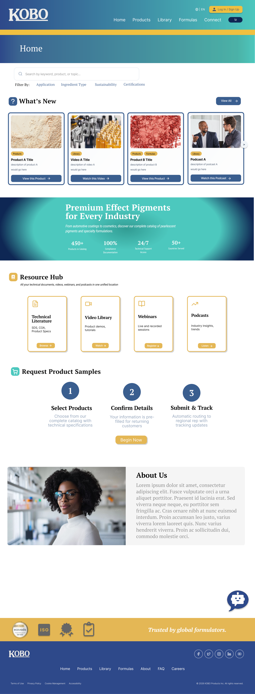
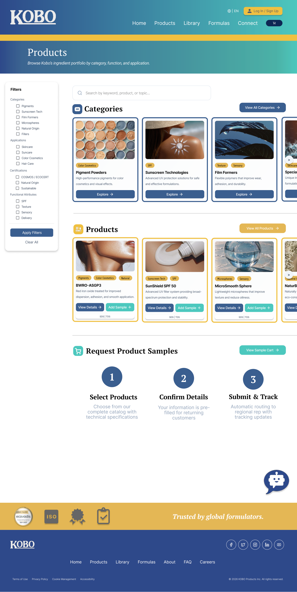
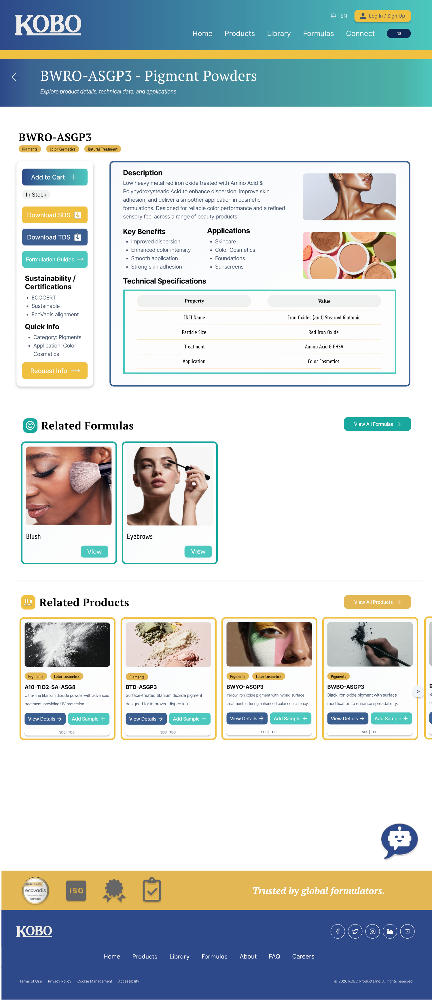
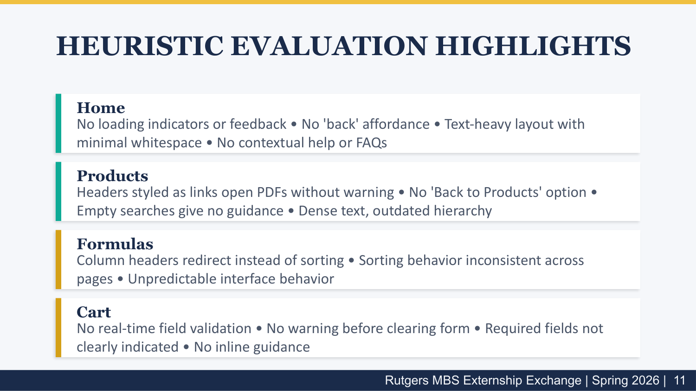
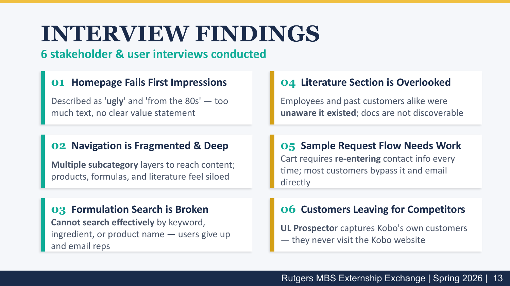
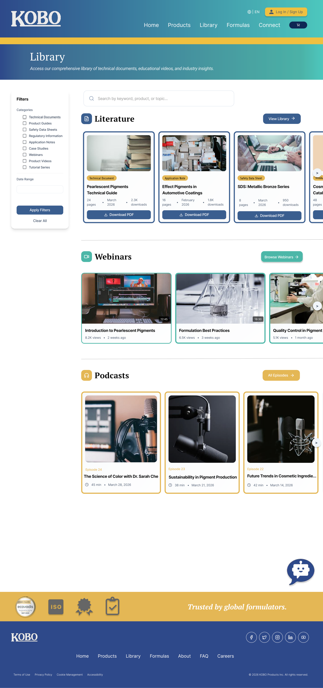

Audit & research
Evaluated the existing website, surfaced usability issues, reviewed competitors, and helped synthesize user and stakeholder feedback into clearer priorities.
Computer Science · UI/UX · Front-End
I’m a Rutgers Computer Science student focused on designing clear, usable digital experiences and translating them into thoughtful front-end products.
Featured case study
Rutgers MBS Externship Exchange · Spring 2026. A team-based redesign focused on improving product discovery, technical content access, search, and the sample-request experience.
Evaluated the existing website, surfaced usability issues, reviewed competitors, and helped synthesize user and stakeholder feedback into clearer priorities.
Focused the redesign around easier navigation, stronger product discovery, smarter search, better access to literature, and a simpler sample-request flow.
Helped translate research findings into reusable Figma components, redesigned core screens, and an interactive prototype presented to stakeholders.






About me
I’m pursuing a B.S. in Computer Science at Rutgers University, New Brunswick, with an expected graduation date of May 2027. My interests include UI/UX design, front-end development, product thinking, and turning research into interfaces that feel simple and intentional.
Resume
Open the full PDF for my current UI/UX-focused resume.
Contact
I’m interested in UI/UX, product design, front-end, and early-career software opportunities.